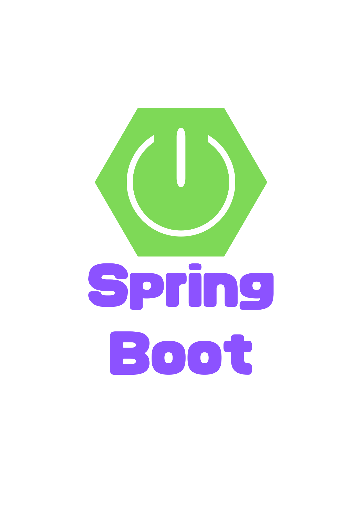

Scroll

Spring Bootの概要と特徴
Spring Bootのインストールとセットアップ
@SpringBootApplicationアノテーション
@RestControllerと@RequestMappingの使い方
SpringBootとデータベースの接続設定
入力データのバリテーション(@Valid,@NotNull,@Sizeなど)
Spring Securityの導入と基本設定
SpringBootで非同期処理を実装する方法(@Async)
単体テストと統合テストの実施方法(JUnit5,Mockito)
SptingBootを使ったマイクロサービスアーキテクチャの基本
SpringBootアプリケーションのビルド(JAR,WARファイル)
起動時の短縮方法
Thymeleafを使ったテンプレートエンジン